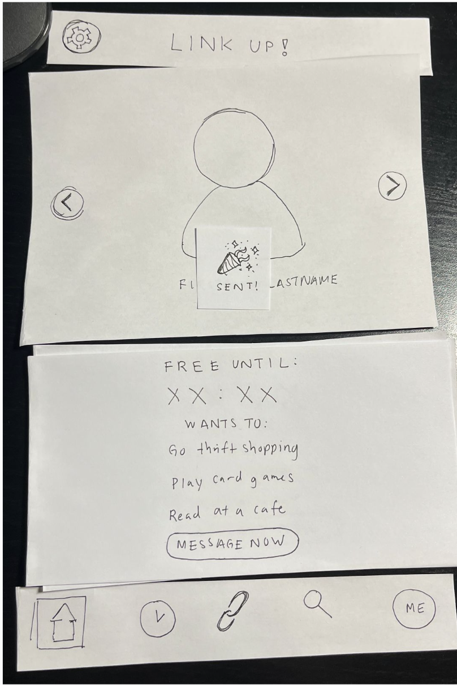
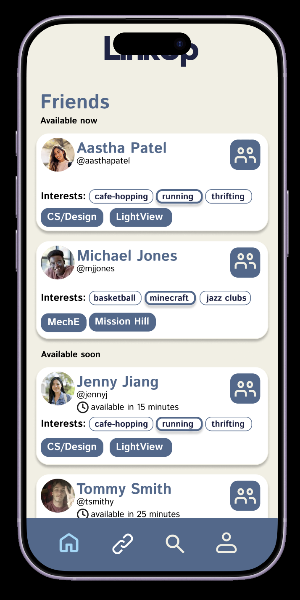
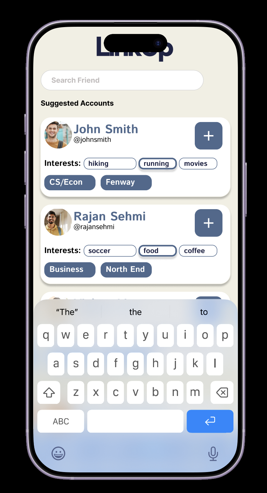

LinkUp — UX Case Study
Project Focus: Designing a low-pressure social coordination app for college students.
UX Research Prototyping Usability Testing Interaction DesignProblem
College students often struggle to build meaningful social connections due to time constraints, social anxiety, and uncertainty around others’ availability. LinkUp was designed to reduce the friction involved in initiating real-life interactions.
Point of View
Busy, socially disconnected college students want low-pressure, structured ways to interact, so that they can connect without the fear of feeling awkward or risking social rejection without spending time and effort they do not have.
My Role
I contributed to the design and evaluation of the LinkUp interface, with a focus on the search functionality. My work centered on improving how users find and add friends, making the process more intuitive and reducing confusion observed during usability testing.
Design Process
Our team conducted user research, developed low-fidelity prototypes, and iterated into high-fidelity designs based on usability testing. Early designs had confusing navigation and unclear interactions, which led us to simplify the interface and make key actions easier to discover.
Design Evolution
Low-Fidelity Prototype:

High-Fidelity Prototype:

Search Interface (My Contribution):

I specifically worked on improving the search functionality, making it easier for users to find and add friends based on usability testing feedback.
Key Design Decisions
- Used bottom navigation to align with familiar mobile conventions.
- Added structured forms to reduce back-and-forth messaging.
- Improved search visibility so users could more easily find and add friends.
- Used guided inputs and dropdowns to reduce user error.
Usability Findings
Testing revealed issues with unclear affordances, hidden interaction cues, and low visibility of hangout requests. We addressed these problems by improving visual hierarchy, making important actions more visible, and applying Nielsen’s usability heuristics.
Evaluation
We evaluated LinkUp using measures such as efficiency, effectiveness, and user impact. These metrics helped us think about whether the app could meaningfully support real-world social interactions.
Reflection
This project taught us the importance of involving users early, testing assumptions, and designing for clarity rather than complexity. If we continued developing LinkUp, we would improve scheduling flexibility, notification visibility, and real-world testing with a larger student population.